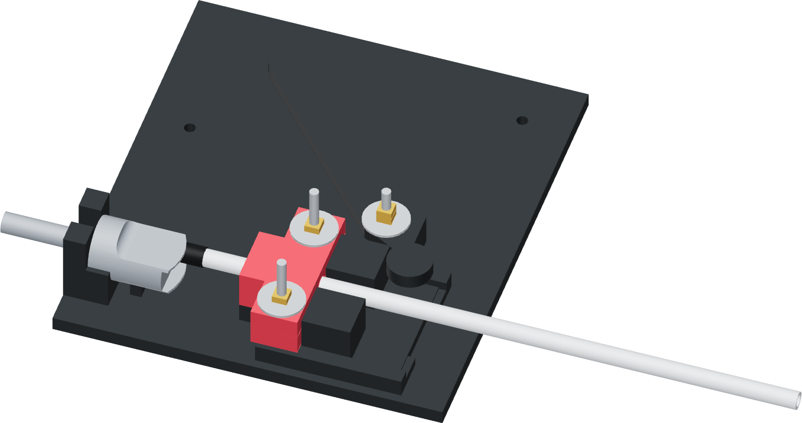

Engage the two grip shoulders
The press provides up to 20 mm of guided travel. Use the T handle for any starting engagement needed by a deeper measured port.

- Move the press lever back and draw the ram fully away from the donor. Lay the tube through its open top and align the sleeved cap with the port.
- For D > 20 mm, hold the base and use the T handle to start the sleeve D - 20 mm into the metal port. Stop when the grip's rear shoulders can reach the retracted ram.
- For D ≤ 20 mm, keep the cap at the mouth and advance the unloaded ram 20 - D mm until it reaches both grip shoulders. The loaded travel is D.
- Set lower jaw D on the ram's full support shelf and engage both rigid rear shoulders against the two ram faces. Keep the tube coaxial with the port.
- Confirm the grip front is still at its clamp-front mark and the thimble is evenly fitted onto the tube.
Finished when
The shelf supports the lower jaw, both shoulders share the ram contact and the tube is straight through the open passage.